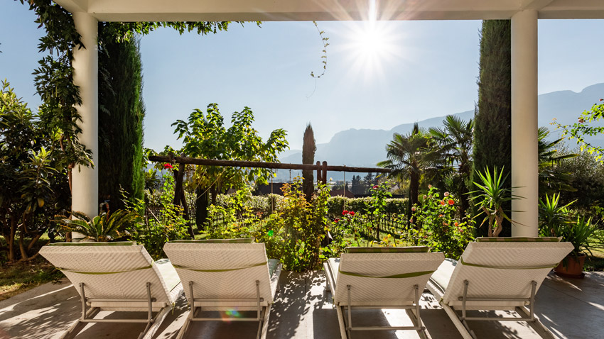

Dintorni
Attività
Arte e cultura, sport e buona cucina: Bolzano e l’Alto Adige hanno molto da offrire. Ecco i nostri consigli – con la distanza dal maso.
Vi preghiamo di verificare gli orari di apertura stagionali.

Arte e cultura
Museo Archeologico dell'Alto Adige
Ammira "Ötzi" dal vivo e scopri tutti i segreti del famoso uomo dei ghiacci.
Messner Mountain Museum a Castel Firmiano
Segui le orme del celebre alpinista altoatesino Reinhold Messner.
Castel Trauttmansdorff a Merano
Scopri il giardino botanico e visita il Touriseum.
Abbazia di Muri-Gries
l'abbazia del 1845 espone affreschi mozzafiato.
Vecchia Parrocchiale di Gries
Una chiesa cattolica romana costruita in stile tardo gotico.
Museo e Palazzo Mercantile
Alla scoperta della storia economica di Bolzano e dell'Alto Adige.
Museion: museo di arte moderna e contemporanea
Museion ospita una vasta collezione di opere in un ambiente moderno.
Museo di Scienze Naturali dell'Alto Adige
Qui puoi scoprire tutto sulle origini delle Alpi altoatesine e molto altro.
Concorso pianistico internazionale F. Busoni
In estate questo evento musicale è un must.
Tempo libero
Lago di Caldaro
Situato tra i vigneti, in questo lago è possibile rilassarsi con una nuotata, andare a pesca o scorrazzare col pedalò.
Laghi di Monticolo
Questi laghi immersi nei boschi sono un luogo ideale per passeggiate e bagni estivi.
Lido di Bolzano
Nelle giornate estive più calde, un bagno in piscina è sempre gradito.
Piscina naturale di Gargazzone
Nuoto in acque naturali, piscine per bambini, pallavolo, calcio balilla e molto altro.
Terme di Merano
Se siete in cerca di relax, di un centro benessere con sauna e varie piscine rilassanti, siete nel posto giusto!
Percorso Alta Fune Xsund a Terlano
Più di 5 livelli di difficoltà per metterti alla prova.
Percorso Tiro con l'arco Xsund a Terlano
Un'esperienza per tutta la famiglia, che diventa divertimento pomeridiano per principianti e bambini.
Minigolf a Termeno
Per una partita di golf anche di notte - aperto ogni giorno dalle 11.00 fino a 00.00.
Gastronomia
Ristorante Moosbauer
Sebbene il ristorante Moosbauer appartenga ad un campeggio, offre un'atmosfera accogliente e, soprattutto, ottimo cibo italiano.
Ristorante panoramico Leitenschenke
Ristorante a conduzione familiare che offre i migliori canederli dell' Alto Adige - uno dei nostri luoghi preferiti caratterizzato da una vista magnifica!
Haselburg
Situato sopra Bolzano, offre la migliore vista sul fondovalle, altamente raccomandato al tramonto (prenotazione consigliata).
Allevamento ittico e ristorante Krebsbach
Pescare un pesce o un granchio e gustarsi il proprio bottino a tavola.
Pasticceria e Café Peter Paul
Dolci e torte per un gusto delizioso e raffinato.
Locanda Zum Falken
Consigliamo il Tris Tirolese, ogni settimana diverso e sempre delizioso. Un classico della cucina altoatesina.
Escursioni
Tschögglberg (Monzoccolo)
Il sentiero è vicino al nostro maso. Punto di partenza ideale.
Passeggiate del Talvera
Il Talvera è il "nostro" torrente. Se percorri le sue passeggiate, scoprirai i castelli Roncolo e Mareccio.
Sciliar
Il monte Sciliar dispone di numerosi sentieri escursionistici. Consigliamo il parcheggio al Lago di Fiè come punto di partenza.
San Genesio
• Il sentiero escursionistico europeo E5 attraversa il paese. Esiste un collegamento con la funivia direttamente da Bolzano.
Altopiano del Renon
Scopri le famose piramidi di terra sul Renon, ad esempio a Soprabolzano o Longomoso.
I Waalwege di Lana
Questi facili sentieri escursionistici conducono lungo antichi corsi d'acqua che venivano utilizzati per irrigare i campi e i vigneti.
Bletterbach
Nel comune di Aldino, un canyon e vari sentieri di eccezionale interesse geologico. Patrimonio dell'Unesco.
Sport invernali
Reinswald, Val Sarentino
4 impianti di risalita, 21 km di piste da sci, sci-alpinismo e snowpark
InformazioniCorno del Renon
3 impianti di risalita, 15 km di piste da sci, piste da fondo, pista per slittino e sentieri per escursioni sulla neve
InformazioniObereggen, Latemar
18 impianti di risalita, 48 km di piste da sci, 2 piste per slittino e snowpark
InformazioniCarezza
15 impianti di risalita, 40 km di piste da sci, 4 piste per slittino, 16 km di piste da fondo e snowfunpark
InformazioniVal Gardena
34 impianti di risalita, 115 km di piste da sci, pista per slittino e 133 km di piste da fondo
InformazioniAlpe di Siusi
21 impianti di risalita, 60 km di piste da sci, 60 km di piste da fondo e parkfun.
InformazioniMerano 2000
8 impianti di risalita, 40 km di piste da sci, 2 piste per slittino e per sci di fondo
Informazioni
Mercati
Mercato del Sabato
Tutto ciò che puoi desiderare: scarpe, vestiti e ovviamente cibo (formaggio, carne, pesce, frutta e verdura).
Mercato biologico del contadino
Regionale, biologico, a diretto contatto con i contadini.
Mercato del contadino
Prodotti esclusivamente regionali.
Mercato dei fiori
Solo qui è possibile trovare i più bei fiori e composizioni floreali speciali.
Mercatino di Natale
Lo spirito natalizio, un mercatino dell'artigianato e il vin brûlé obbligatorio. Tutto questo nel periodo in cui tutti sono più buoni.
Mercato di primavera
Il risveglio primaverile viene celebrato con tutta la famiglia.
Quando possiamo accogliervi?
La richiesta non è vincolante – vi rispondiamo al più presto.
Invia richiesta